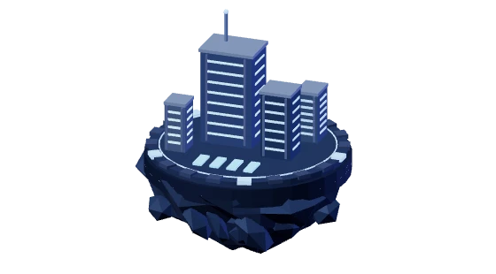
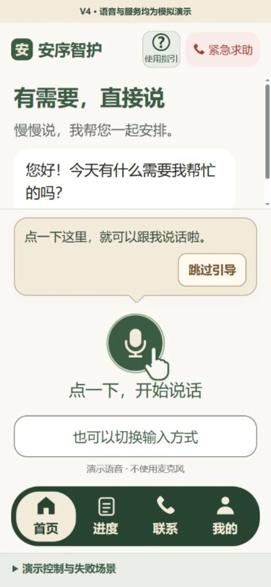
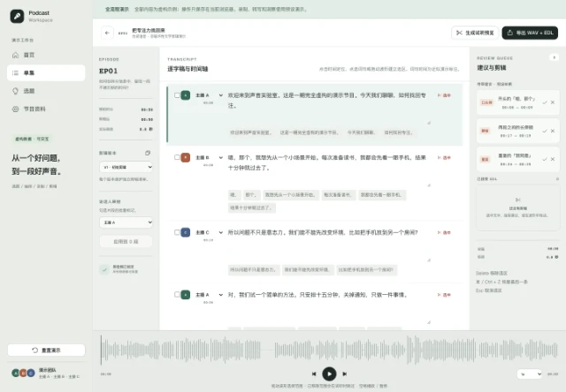
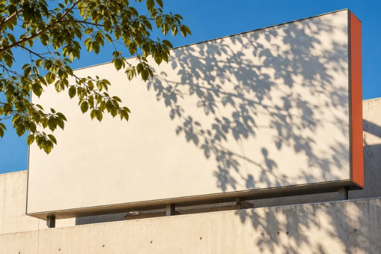
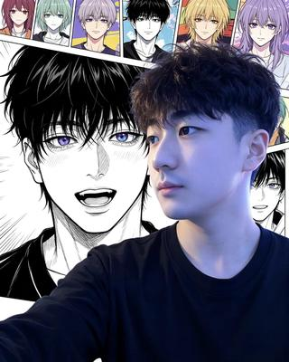

工程起点

从软件工程走向 AI 基础设施。
软件系统工程｜系统架构 · 全栈开发
AI Infra｜算法工程 · 模型部署 · 推理优化
AI质量工程｜自动化评测 · Agent Engineering · 产品落地
AI Engineer · Builder · Observer
构建 AI 系统，探索技术、人类与未来之间的关系。
A Universe in Progress.
GitHub / @lemon-neko五个世界，一座宇宙。

从软件工程走向 AI 基础设施。
软件系统工程｜系统架构 · 全栈开发
AI Infra｜算法工程 · 模型部署 · 推理优化
AI质量工程｜自动化评测 · Agent Engineering · 产品落地



有感 · 审美手记
一句话已经让人看见的东西，下一句未必需要再替它总结。读到一片叶子的影子落在广告牌上，我们可以先看光、看形状，也可以只觉得这个巧合有趣。
审美不是给作品宣布一个高低。它更像辨认选择：这里为什么停顿，那里为什么留空，颜色为什么只出现一小块。把这些选择说具体，比说一句“很高级”更有帮助。
试试把你写过的一段话删掉最后一句。读一遍，再放回来。哪一版更接近你想表达的感受？没有唯一正确答案。
在有感阅读原文 ↗有感 · 创意手记
杯子通常用来喝水。如果今天它负责收集回声呢？一个小小的用途变化，就能把熟悉的物件重新打开。
好的变体不只是换个形容词。可以换观察者、换讲述顺序、换物件承担的作用。先守住一个念头，再让形式走远一点。
在桌上找一件东西，给它一个今天不必完成的任务。你可以画出来、写一句话，或者只是带着这个问题继续过一天。
在有感阅读原文 ↗有感 · 共情手记
同一件小事，站在不同位置的人可能知道不同的信息。没有告别，可能是赶时间，也可能是不知道怎么开口；我们看到的动作，不等于完整的原因。
共情可以先从保留一个空位开始。给快乐留位置，也给犹豫、不喜欢、说不清的矛盾留位置。不必马上把它们改写成成长。
试着把一次无伤大雅的误会从两个人的视角各写三句。只写他们知道的事情。看看哪些空白让你更愿意继续听。
在有感阅读原文 ↗播客工作台 · 公开演示样例
一集关于注意力的虚构样例，可查看素材、提纲与剪辑流程。

I build things, and think about the systems behind them.
通过构建系统、记录思考和实践实验，探索 AI 时代技术与人的关系。
Enough abstraction makes it concrete.
当智能逐渐成为基础设施，创新、审美与共情，或许才是人类真正的差异化价值。
Innovation · Aesthetics · Empathy
Yubai Space Console · v2.1
连接成功。输入 help 查看命令，或输入 visit ventures 探索星球。
按回车执行命令，使用上下方向键浏览历史，按 Control 或 Command 加 L 清屏。